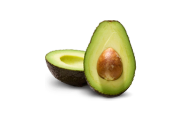

Mi teszi azIntenskin-et ilyen hatékonnyá?
Nanoarany
Kiegyenlíti a mély korú ráncokat, intenzíven hidratálja és táplálja mikroelemekkel a nedvesség fenntartása érdekében. Megszünteti a vörösséget, az érrendszert és a pigmentációt, kiegyenlíti az arcszínt.

Aloe vera
Távolítja el a toxinokat a sejtekből, amelyek megakadályozzák a fiatalítást. Normalizálja a bőr víz-zsír egyensúlyát, kiküszöböli a duzzanatot és az irritációt. Meghúzza az arc ovális oldalát.

Avokádóolaj
Finomítja a finom arcráncokat a szem, az ajkak és a száj környékén. Megakadályozza a kor foltok és sötét körök megjelenését a szem alatt, világosítja a meglévőket.
Hialuronsav
Rugalmassá és hidratálttá teszi a bőrt. Meghúzza az arc ovális formáját, megakadályozza a mély korú ráncok megjelenését. Kisimítja a bőrt és vitaminnal telíti a fiatalosság megőrzését.